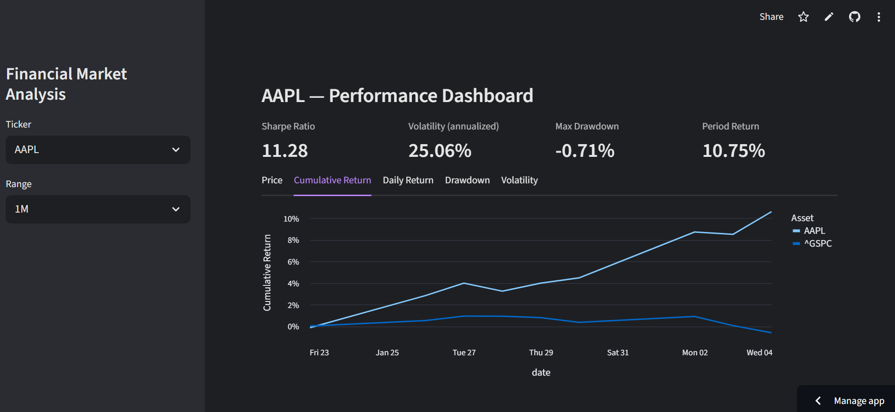
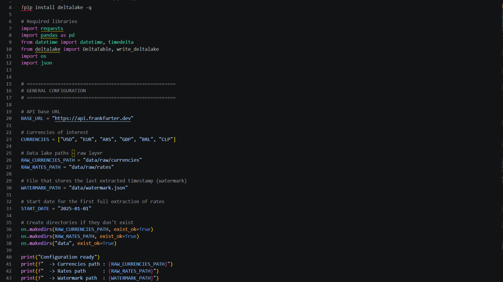

From raw APIs to production-grade web dashboards, I extract and transform data, secure it end to end, and design the interfaces that turn it into KPIs — giving teams the reliable, up-to-date numbers they need for data-driven decisions.
Ask a business question in plain English — "what's our MRR growth?" — and get an instant answer with a chart and a short explanation, no SQL required.

A live dashboard that tracks how risky and profitable a stock has been — Sharpe ratio, volatility, drawdown — updated automatically every day, with a second view comparing whole market sectors.
A live map for a bike-rental business, showing exactly where every bike is and flagging any that go missing or need maintenance — built as a working prototype for a real small business.

A self-contained pipeline that pulls daily currency exchange rates and keeps a running history — built to demonstrate incremental loading without relying on a cloud warehouse.
Data is the throughline of everything I build: pulling and reshaping it from APIs and databases until it's clean and trustworthy, handling it securely — credentials, access, and pipelines built so nothing sensitive leaks by accident — and designing the web dashboards that put the right numbers in front of the right person, updated automatically, every day. Increasingly, that also means integrating AI agents that let people query that data directly instead of waiting on a report. I care less about the tool of the week and more about whether someone can look at a screen and know what to do next.